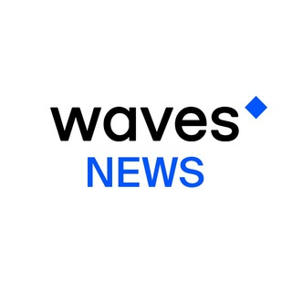

Wavesnews and Announcements, wavesnews on TGViewer

Wavesnews and Announcements
t.me/wavesnews
The fastest #blockchain platform with real-world solutions for storing or exchanging tokens, trading (#DEX) or running business logic (#Waves #smartcontracts).
Website: https://wavesplatform.com
Communities: @wavescommunity (EN), @wavescommunityRU (RU)
Website: https://wavesplatform.com
Communities: @wavescommunity (EN), @wavescommunityRU (RU)